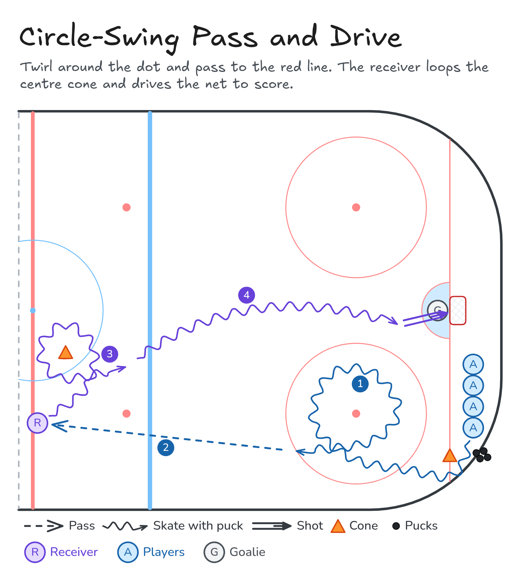

Circle-Swing Pass and Drive
Twirl around the dot and pass to the red line. The receiver loops the centre cone and drives the net to score.
- Half ice
- Skating
- Passing
- Shooting
Watch
Diagram

Coaching points
- Loop the dot tight with your head up and the puck in front of you.
- Pass flat and hard to the receiver's stick.
- Receiver: turn tight around the centre cone, then build speed.
- Drive the net with the puck in front. Shoot low to score.
How it runs
- Players behind the goal line by the cone with pucks, a receiver on the red line and a cone at centre ice.
- Take a puck and skate a full loop around the closest faceoff dot.
- Pass to the receiver on the red line.
- The receiver loops the centre cone.
- The receiver drives the net and shoots to score.
- The passer skates to the red line to be the next receiver. The receiver goes to the back of the line.
Downloads

Open the Excalidraw file in Excalidraw to change the diagram.